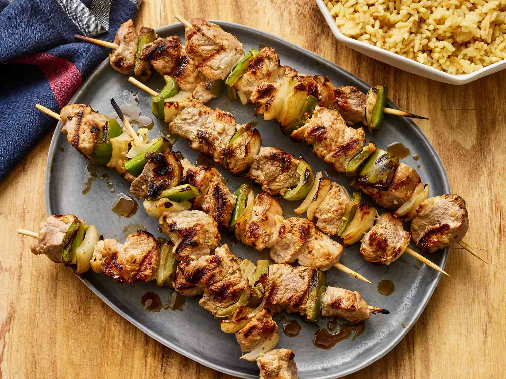
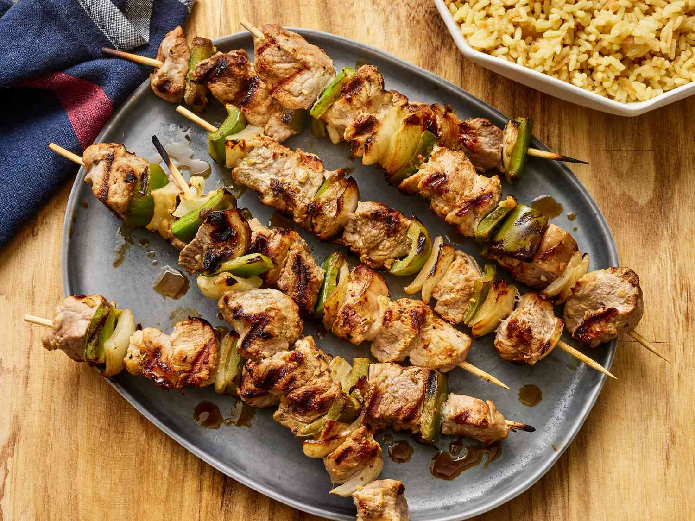

A história da Grécia é praticamente a história do mundo ocidental. Lar de Sócrates, Platão e Aristóteles, a Grécia Antiga foi o berço da democracia, da filosofia e das artes clássicas. Com cidades-estados como Atenas e Esparta, ela floresceu na Antiguidade, sendo depois incorporada ao Império Romano, ao Bizantino e ao Otomano. Após séculos de dominação, conquistou a independência no século XIX. Hoje, a Grécia combina ruínas milenares, como o Parthenon, com ilhas paradisíacas como Santorini e Creta — um verdadeiro mergulho no tempo.
Um país ensolarado no sudeste da Europa, onde o azul do mar se mistura com ruínas milenares e vilarejos brancos encantadores. A capital é Atenas, vibrante e histórica, mas destinos como Santorini, Mykonos e Tessalônica também encantam com seu estilo próprio. A Grécia tem cerca de 10,3 milhões de habitantes e uma área de aproximadamente 131 mil km². Com tantas ilhas e regiões costeiras, é o lugar perfeito pra quem ama mar, mitologia e boa comida. O idioma oficial é o grego e a moeda é o euro (€).
E o clima?
A Grécia tem um clima mediterrâneo típico: verões quentes e secos, invernos suaves. É um destino ensolarado a maior parte do ano, ótimo pra quem gosta de sol e mar.Alta Temporada (junho a agosto): É quando as ilhas ficam cheias de turistas e o sol brilha forte. As temperaturas passam facilmente dos 30°C. Ideal pra quem quer curtir praias e festas.
Meia Temporada (abril-maio / setembro-outubro): Ainda faz calor, mas sem exageros, e o movimento diminui. Ótimo para conhecer ruínas e cidades com mais calma.
Baixa Temporada (novembro a março): Os dias são mais frios e chuvosos, mas é quando os sítios arqueológicos estão mais vazios e as passagens mais em conta. Atenas continua sendo boa pedida nessa época.
Pontos turísticos

Acrópole de Atenas
Um dos maiores símbolos da civilização ocidental e da história grega.
Localização: Atenas, Grécia.
Valor:Entrada geral: €30; meia-entrada: €15.
Horário de Funcionamento:
De abril a setembro: 8h às 20h; de outubro a março: 8h às 17h

Santorini
Ilha famosa por suas casas brancas com cúpulas azuis e pôr do sol mágico.
Localização: Ilha de Santorini, Cíclades, Grécia.
Valor: Passeios pela ilha são gratuitos; atividades específicas podem ter custos variados.
Horário de Funcionamento:
A ilha está sempre aberta aos visitantes; atrações específicas possuem horários próprios.

Mosteiros Meteora
Mosteiros construídos no topo de penhascos imponentes, cenário surreal.
Localização: Kalambaka, região da Tessália, Grécia.
Valor: Cada mosteiro pode cobrar uma taxa de entrada; verifique os valores atualizados antes da visita.
Horário de Funcionamento:
Variam conforme o mosteiro; por exemplo, o Mosteiro de Grande Meteoro abre das 9h às 15h e fecha às terças-feiras.
Delos
Ilha arqueológica sagrada com ruínas da Grécia Antiga.
Localização: Próxima a Mykonos, Cíclades, Grécia
Valor: Entrada geral: €20; reduzida: €10. O preço do bilhete não inclui o transporte de barco até a ilha.
Horário de Funcionamento:
No verão, das 8h às 20h diariamente
Gastronomia
 

A gastronomia irlandesa é marcada pela simplicidade dos ingredientes locais, preparados de forma caseira e com um toque especial de conforto. Batatas, carnes, repolho e pães rústicos formam a base de muitos pratos que, mais do que alimentar, aquecem o corpo e a alma. Entre os pratos mais tradicionais está o Irish Stew, um ensopado clássico preparado com carne de cordeiro, batatas, cenouras e cebolas — perfeito para os dias frios e chuvosos do país. Outra especialidade é o Boxty, uma espécie de panqueca feita com batata ralada e purê, crocante por fora e macia por dentro. Já o Colcannon combina purê de batatas com couve ou repolho e é servido com manteiga derretida, trazendo um sabor rústico e reconfortante. Em Dublin, é comum encontrar o Coddle, um cozido feito com salsichas, bacon, batatas e cebolas, muito popular entre os moradores locais. O café da manhã irlandês, conhecido como Full Irish Breakfast, é uma refeição robusta que inclui ovos, bacon, salsichas, feijão, tomate grelhado, cogumelos, pão e os famosos black e white puddings — embutidos feitos com aveia e, no caso do black pudding, sangue suíno. É uma verdadeira refeição para começar o dia com energia. Os pães também têm lugar de destaque, com o tradicional Soda Bread, preparado com bicarbonato de sódio em vez de fermento, sendo uma presença constante à mesa. Outra iguaria típica é o Barmbrack, um pão doce com frutas cristalizadas, consumido especialmente no Halloween, muitas vezes com pequenos objetos simbólicos escondidos na massa como parte de uma brincadeira folclórica. Para os amantes de sobremesas, a Irlanda oferece delícias como a torta de maçã (Apple Tart), servida com creme fresco ou sorvete, e o clássico Bread and Butter Pudding, feito com fatias de pão amanhecido, manteiga, ovos e leite — uma sobremesa simples, mas cheia de sabor. Nenhuma experiência gastronômica na Irlanda estaria completa sem um brinde. A famosa cerveja Guinness, um ícone nacional, está presente em quase todos os pubs, acompanhando bem qualquer refeição. E para aquecer nos dias mais frios, nada melhor do que um Irish Coffee — café quente misturado com uísque irlandês, açúcar e uma generosa camada de creme. A culinária irlandesa é uma expressão do estilo de vida local: simples, calorosa e cheia de história. Seja em um pub animado ou em uma aconchegante casa de campo, cada prato conta um pouco do que é viver e sentir a Irlanda de verdade.